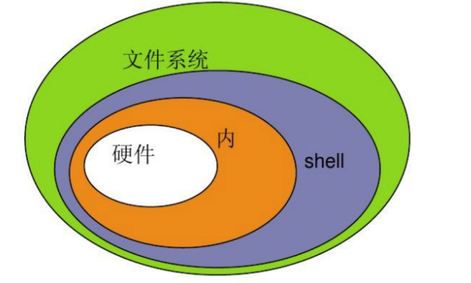
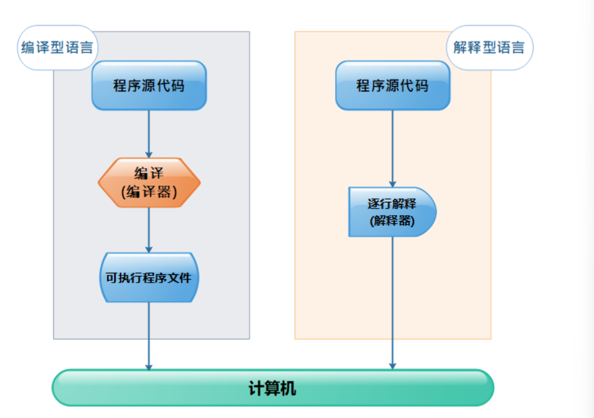

Shell脚本编程 简介 
Linux 的 Shell 种类众多，常见的有：
Bourne Shell（/usr/bin/sh或/bin/sh） Bourne Again Shell（/bin/bash） C Shell（/usr/bin/csh） K Shell（/usr/bin/ksh） Shell for Root（/sbin/sh） 程序编程风格
过程式：以指令为中心，数据服务于命令 对象式：以数据为中心，命令服务于数据 shell是一种过程式编程 过程式编程
编程语言分类
编译型语言 解释型语言（shell是一种解释型语言） 
运行脚本
给予执行权限，通过具体的文件路径指定文件执行
直接运行解释器，将脚本作为解释器程序的参数运行
bash退出状态码
范围是0-255
脚本中一旦遇到exit命令，脚本会立即终止，终止退出状态取决于exit命令后面的数字
如果未给脚本指定退出状态码，整个脚本的退出状态码取决于脚本中执行的最后一条命令的状态
变量 变量命名 1 2 3 4 5 6 7 8 9 10 11 12 有效命名：for file in `ls /etc`for file in $(ls /etc)
使用变量 1 2 3 4 5 6 7 8 9 10 定义变量："eagles" echo $your_name echo ${your_name} for skill in Ada Coffe Action Java; do echo "I am good at ${skill} Script" done $skillScript ，则将会输出空值
只读变量 1 2 3 4 5 #!/bin/bash "http://www.google.com" readonly myUrl"http://www.runoob.com"
删除变量 1 2 3 4 #!/bin/sh "http://www.runoob.com" unset myUrlecho $myUrl
变量种类 本地变量：生效范围仅为当前shell进程；（其他shell，当前的子sehll进程均无效）
环境变量：生效范围为当前shell进程及子进程
变量声明1：export name = “value” 变量声明2：declare -x name = “value” bash中有许多内建的变量环境：SHELL,PATH等等 局部变量：生效范围为当前shell进程中某代码片断（通常指函数）
位置变量： 2…来表示，让脚本在脚本代码中调用通过命令行传递给它的参数；
特殊变量：? 0 * @ #
1 2 3 4 5 6 7 8 9 10 11 12 13 14 15 16 17 18 19 $1 ,$2 ,…：对应调用第1，第2等参数$0 ：命令本身$@ ：传递给脚本的所有参数$# ：传递给脚本的参数的个数echo "命令本身是：$0 " echo "第一个参数是：$1 " echo "第二个参数是：$2 " echo "一共有$# 个参数" echo "所有参数是：$@ " "$(wc -l $1|cut -d' ' -f1) " echo "This file have ${linecount} lines"
数组 1 2 3 4 5 6 语法格式：array_name=(value1 ... valuen)
1 2 3 4 5 6 7 8 读取数组：${array_name[index]} echo "数组的元素为: ${my_array[*]} " echo "数组的元素为: ${my_array[@]} "
1 2 3 4 5 6 7 获取数组的长度：echo "数组元素个数为: ${#my_array[*]} " echo "数组元素个数为: ${#my_array[@]} "
算数运算 1 2 3 4 5 + ‐ * / % ** ...$RANDOM
1 2 3 4 5 6 7 8 9 (1) let var（变量名）=算术表达式expr arg1 arg2 arg3 …) var=$(expr 1 + 2)expr 本身是一个命令，可以直接进行运算
1 2 3 4 5 练习1：计算/etc/passwd文件中第10个用户的第20个用户的ID之和
条件测试 测试命令：test EXPERSSION
1 2 3 4 5 6 7 8 num1=100if test $[num1] -eq $[num2]then echo '两个数相等！' else echo '两个数不相等！' fi
数值测试 ‐gt：是否大于
‐ge：是否大于等于
‐eq：是否等于
‐ne：是否不等于
‐lt：是否小于
‐le：是否小于等于
练习题，比较两个数的大小
1 2 3 4 5 6 7 8 9 10 [root@localhost ~]read -p "请输入两个整数" num1 num2if [ $num1 -gt $num2 ];then echo "$num1 > $num2 " elif [ $num1 -lt $num2 ];then echo "$num1 < $num2 " else echo "$num1 = $num2 " fi
字符串测试 1 2 3 4 5 6 7 8 ==：是否等于
文件测试 1 2 3 4 5 6 7 8 9 10 11 12 13 14 15 16 17 18 19 20 21 22 23 24 25 26 27 28 29 简单的存在性测试：
组合测试条件 1 2 3 4 5 6 7 8 9 10 11 12 逻辑运算符：
选择执行 1 2 3 if 判断条件；then fi
1 2 3 4 5 if 判断条件；then else fi
1 2 3 4 5 6 7 if 判断条件;then elif 判断条件;then else fi
1 2 3 4 练习1：判断两个数是否相等if 经常会与test 命令一起使用
1 2 3 4 5 6 7 8 9 10 11 12 13 14 15 read -p "请输入用户名：" userid $user &> /dev/null"$(echo $?) " if test $[thing] -eq 0then echo "用户已存在" else $user echo $user | passwd --stdin $user &>/dev/nullecho -e "账户已id成功创建\n" echo "密码已更新为账户名" $user fi
用户交互 read命令 常用选项：
‐a：将内容读入到数组中echo ‐n “Input muliple values into an array:” read ‐a array echo "get $